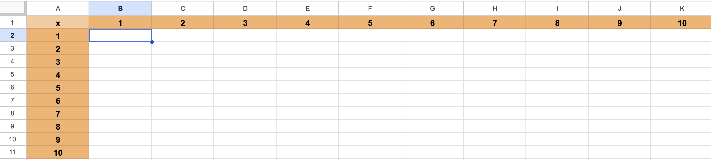

Laboratorium 6: Podsumowanie.
Po kilku tygodniach pracy z pakietem Google Workspace nadszedł czas na uporządkowanie zdobytej wiedzy i przygotowanie się do kolokwium zaliczeniowego. Dotychczasowe laboratoria obejmowały pracę z narzędziami Google Docs, Gemini, Keep, Forms, Sheets oraz Slides.
Celem tego laboratorium jest uporządkowanie materiałów na Dysku Google oraz przygotowanie się do kolokwium zaliczeniowego podsumowującego dotychczasową pracę z pakietem Google Workspace.
W ramach przygotowań do kolokwium zaliczeniowego z Technologii Informacyjnej, podsumowującego dotychczasową pracę z pakietem Google Workspace (Google Docs, Gemini, Keep, Forms, Sheets, Slides), należy uporządkować swoje materiały na Dysku Google.
Przed przystąpieniem do kolokwium, proszę o zorganizowanie plików na swoim Dysku Google w następujący sposób:
Zadanie 1: Tabela rekordzistów na 100m
W Google Docs należy stworzyć tabelę prezentującą aktualnych rekordzistów świata w biegu na 100 metrów mężczyzn i kobiet. Wzoruj się na tabelach dostępnych na stronie Bieg na 100 metrów (z pominięciem flag), proszę o estetyczne odwzorowanie kolorystyki. Należy również utworzyć hiperłącza tak, aby kliknięcie w nazwę zawodnika lub w nazwę miejsca zawodów przenosiło do odpowiedniej strony internetowej.
Zadanie 2: Tabliczka mnożenia
W Google Sheets należy wygenerować tabliczkę mnożenia od 1 do 100. W komórkach od B1 do K1 oraz od A2 do A11 należy wprowadzić liczby od 1 do 10. Następnie, w komórce B2 należy wprowadzić odpowiednią formułę wykorzystującą adresowanie mieszane. Nie należy wprowadzać żadnych wartości ani formuł w pozostałych komórkach przed wykonaniem przeciągnięcia. Przeciągnięcie komórki B2 w prawo i w dół powinno spowodować automatyczne wypełnienie całej tabliczki mnożenia.

Powodzenia na kolokwium 😉
Laboratoria z Technologii Informacyjnej pozwoliły zapoznać się z kluczowymi narzędziami pakietu Google Workspace. Umiejętność sprawnego korzystania z Google Docs, Sheets i Slides stanowi solidną podstawę do efektywnej pracy z dokumentami, danymi i prezentacjami w środowisku cyfrowym.
Strona główna